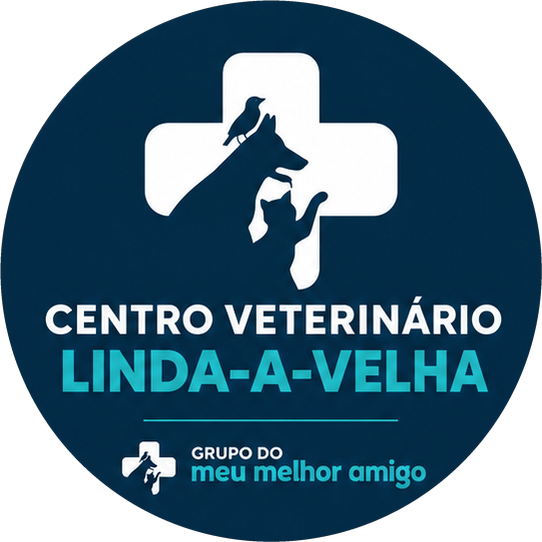
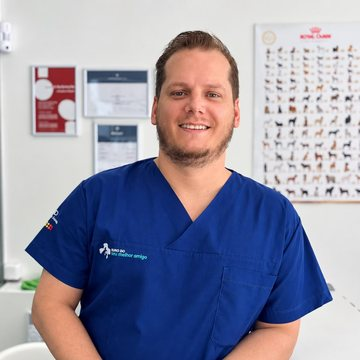

Consultas gerais
Avaliação clínica de cães, gatos e animais exóticos, com tempo para ouvir as suas dúvidas.
Consultas, vacinação, desparasitação e acompanhamento para cães, gatos e animais exóticos, com um médico veterinário perto de si. Loja de produtos no mesmo espaço.

Conhecemos os nossos clientes e os seus animais pelo nome.
Aconselhamos com calma, sem pressas e sem vender o que não precisa.
Marcas reconhecidas e o apoio de um grupo de clínicas veterinárias.
O nosso consultório
Acompanhamos o seu animal em todas as fases da vida, com atenção, tempo e linguagem clara. Marque a sua consulta e fale connosco.
Avaliação clínica de cães, gatos e animais exóticos, com tempo para ouvir as suas dúvidas.
Planos de vacinação para cachorros, gatinhos e adultos, adaptados a cada animal.
Proteção interna e externa contra pulgas, carraças e outros parasitas.
Colocação de microchip e orientação sobre o registo do seu animal.
Consultas de rotina para detetar problemas cedo e manter a saúde em dia.
Aconselhamento sobre a alimentação mais adequada à idade e ao estado de saúde.
Para quem cuidamos
Cuidamos de animais de companhia de todas as espécies: cães, gatos, coelhos, roedores, aves, répteis e furões. Marque a consulta do seu companheiro.


E também furões e outros animais exóticos. Fale connosco. Fotografias: Unsplash (Richard Laursen, engin akyurt, Elina Okolit, Zhaoli JIN, Ilona Froehlich, Ali Kazal).
Loja no mesmo espaço
Rações, suplementos e produtos de saúde de marcas de confiança, escolhidos em conjunto com a equipa clínica.
Visite-nosMarcas em destaque
E muitas outras marcas disponíveis na loja. Estas são apenas algumas das que destacamos.
A equipa
Médico Veterinário

Atendimento ao Cliente
Consultas
Preencha o pedido e confirmamos o dia e a hora por telefone ou e-mail. O pedido abre no seu programa de e-mail e só é enviado quando carregar em "Enviar".
Nos casos urgentes, não use este formulário: ligue-nos ou dirija-se a um serviço de urgência veterinária.
Contactos
Sugestões
Diga-nos o que podemos fazer melhor. O e-mail é opcional e nada fica guardado neste site.